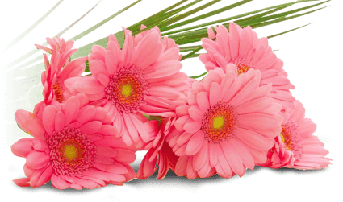

Цветы
Цветок — система органов семенного размножения цветковых (покрытосеменных) растений.
Цветок представляет собой видоизменённый, укороченный и ограниченный в росте спороносный побег, приспособленный для образования спор и гамет, а также для проведения полового процесса, завершающегося образованием плода с семенами.
Исключительная роль цветка как особой морфологической структуры связана с тем, что в нём полностью совмещены все процессы бесполого и полового размножения.
От шишки голосеменных растений цветок отличается тем, что у него в результате опыления пыльца попадает на рыльце пестика, а не на семязачаток непосредственно, а при последующем половом процессе семязачатки у цветковых развиваются в семена внутри завязи.